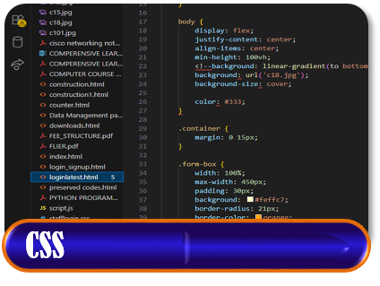
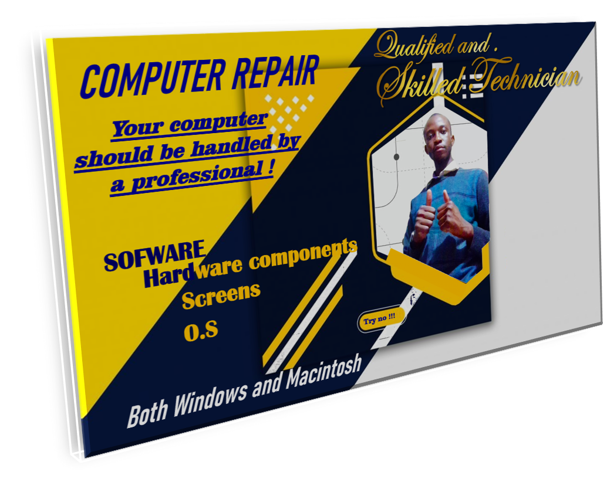

BOAZ OCHIENG | MY ONLINE CV
BACKGROUND INFORMATION
Personal profile and background details
ACADEMIC QUALIFICATIONS
Educational background, training and qualifications
KASNEB
Certified Accounting Management
Textile and Garment Technology Institute
National Youth Service (NYS) – ICT Technician Level 6
Institute of Business Studies
Diploma in Information and Communication Technology
Ugunja Technical and Vocational College
Information and Communication Technology (ICT) Certificate
Umina Mixed Secondary School
Kenya Certificate of Secondary Education (KCSE)
Ambira Primary School
Kenya Certificate of Primary Education (KCPE)
WORK EXPERIENCE
Professional experience and key responsibilities
RuralNet ICT Academy
Key Responsibilities
- ICT Technician
- IT Consultant
- Network Administration
- Software installation, maintenance and upgrades
- Web development and website maintenance
- Computer repair and maintenance
- Graphic designing
- Marketing
- Academic circulars, programmes and institutional policy organisation and planning
Saviour Computer Centre
Key Responsibilities
- Cyber café operations
- Marketing
- Providing technical support
- Responding to general client enquiries
- Selling stationery
TECHNICAL EXPERTISE
Professional skills and areas of technical competence

HTML

CSS

JavaScript

Python
Firebase

Graphic Designing

Computer Repair & Maintenance

Network Administration
LANGUAGES
Languages spoken and used in communication
🇬🇧 English
🇰🇪 Kiswahili
Luo
PROJECTS & PROFESSIONAL CONTRIBUTIONS
Selected ICT development, web development and institutional administration projects
Management Information System (M.I.S)
RuralNet ICT Academy
Development of a Management Information System designed to store, manage and monitor student records and institutional financial information.
Key Features:- Student registration and records management
- Student fee updates and payment tracking
- Automated receipt generation
- Login, logout and password reset management
- Network renewal date alerts
The system is designed to operate on a local network to limit exposure to unauthorised public access.
System Development Database ManagementInstitutional Website Development
RuralNet ICT Academy
Development and maintenance of the institutional website and its integrated management portals.
Key Features:- Staff portal
- Student portal
- Student Management Information System
- E-Library system
- Examination portals
- Certification resources
- Student learning resources
- Staff and management resources
Institutional Administration & Planning
RuralNet Training College
Participation in institutional planning, administrative organisation and academic programme development.
Key Contributions:- Development of an institutional strategic plan
- Structuring the institution's administrative policy
- Development of fee structures for accounting courses
- Preparation of academic timetables for accounting courses
PROFESSIONAL REFEREES
Professional references and recommendations
1. Lecturer Juma
Institution: National Youth Service – Textile and Garment Technology Institute
Position: TGTI Lecturer
Telephone: +254 759 708 25
2. Madam Olivia Alang'o
Position: Manager, RuralNet ICT Academy
GET IN TOUCH
Feel free to contact me for professional enquiries, collaboration and career opportunities.